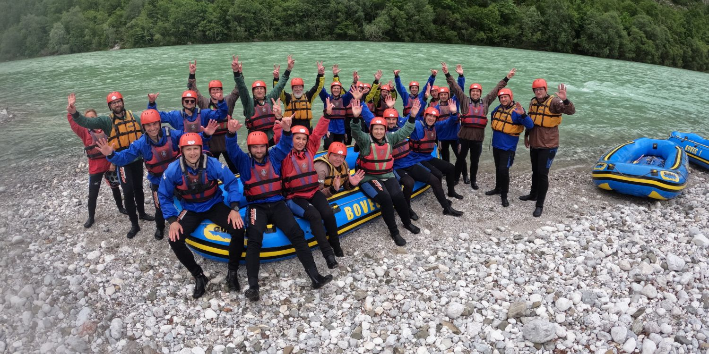

Equipment Provided
We offer helmets, life vests, paddles, and all safety gear needed for your trip.

Local Expert Guides
Our bilingual guides are certified and trained in river safety and first aid.
Camping Experience
Extend your journey with a night of camping by the river under the Huancavelica sky.